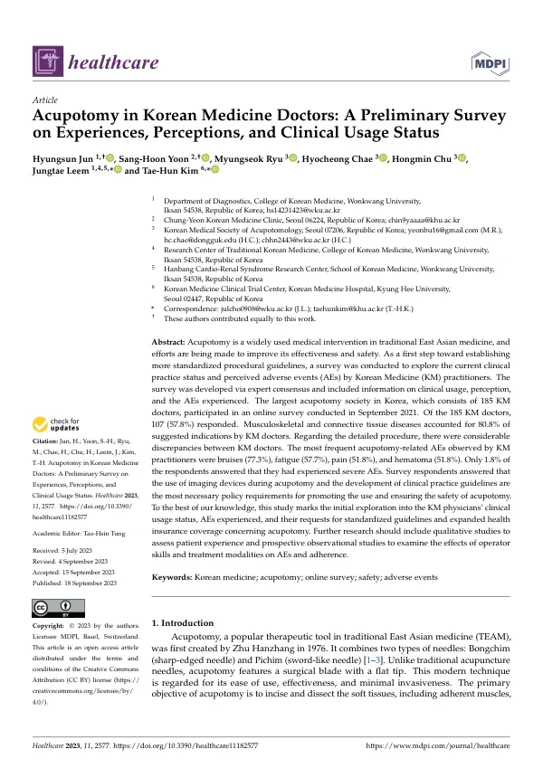

Acupotomy in Korean Medicine Doctors: A Preliminary Survey on Experiences, Perceptions, and Clinical Usage Status
Jun H, Yoon SH, Ryu M, Chae H, Chu H, Leem J, Kim TH
Healthcare 11(18):2577

첫 장 · 오픈액세스First page · open access
논문 소개Summary
도침은 1976년 주한장이 만든 치료로, 봉침(날이 선 침)과 피침(칼 모양 침)을 합친 형태입니다. 끝이 납작한 수술용 칼날이 달려 있어 유착된 연부조직을 절개하고 박리하는 것이 목적입니다. 침보다 굵고 깊이 들어가는 만큼 안전 문제가 따르는데, 국내에서 도침을 실제로 어떻게 쓰고 있는지, 어떤 이상반응을 겪는지를 조사한 자료가 없었습니다.
2021년 9월, 국내 최대 도침 학회에 속한 한의사 185명을 대상으로 온라인 설문을 돌렸습니다. 문항은 전문가 합의로 만들었고 111명이 동의해 응답했으며, 모든 항목에 답한 107명(57.8%)을 기준으로 분석했습니다. 응답자의 75.2%가 남성이고 평균 나이는 38.3±9.9세, 임상 경력은 평균 11.1±9.39년, 도침 경력은 평균 4.06±3.05년이었습니다.
시술 부위는 요추·골반(98.2%), 두경부(89.9%), 상지(53.2%) 순이었고 적응증으로 제시된 26개 상병 가운데 21개가 근골격계 및 결합조직 질환이었습니다. 그런데 세부 시술 방법은 응답자마다 상당히 달랐습니다. 삽입 깊이는 근육층이 54.5%, 골막이 30.1%였고 진피에 그치는 얕은 삽입은 6.4%로 가장 적었습니다. 한 회 자입 점수는 최소 2개에서 최대 25개, 중앙값 8개였고 다음 시술까지 권하는 간격은 중앙값 5일이었습니다. 통증 처치를 아무것도 하지 않는다는 응답이 58.2%였습니다.
이상반응으로는 멍(77.3%), 피로(57.7%), 통증(51.8%), 혈종(51.8%)이 많았고 중대한 이상반응을 겪었다는 응답은 1.8%였습니다. 안전한 시술과 도침 활용을 위해 가장 필요한 정책으로는 시술 중 영상장비 사용과 임상진료지침 개발이 꼽혔습니다. 하위군 분석에서는 영상장비를 적극적으로 쓰는 쪽에서 이상반응의 종류가 적었습니다.
한계는 네 가지입니다. 도침 학회 회원을 대상으로 했으므로 전체 한의사로 일반화할 수 없고, 결론은 도침을 쓰는 한의사 집단의 관점으로 읽어야 합니다. 설문지는 문헌을 참고해 만들었을 뿐 타당화를 거치지 않았습니다. 영상장비는 근무지에 갖춰져 있는 경우만 물어 실제 참고율이 낮게 잡혔을 수 있고, 하위군 비교도 두 군의 크기가 고르지 않아 정확도에 한계가 있습니다. 마지막으로 지난 환자의 호소를 기억에 기대어 답했으므로 회상 비뚤림이 있습니다.
Acupotomy, devised by Zhu Hanzhang in 1976, combines two needle types — the sharp-edged Bongchim and the sword-like Pichim. Its flat surgical blade is meant to incise and dissect adherent soft tissue. Being thicker than an acupuncture needle and inserted deeper, it carries safety questions, yet no data existed on how it is actually used in Korea or what adverse events practitioners encounter.
In September 2021 an online survey was sent to the 185 Korean medicine doctors belonging to Korea's largest acupotomy society. The questionnaire was developed by expert consensus; 111 consented and responded, and the analysis is based on the 107 (57.8%) who answered every item. Of the respondents, 75.2% were men, mean age was 38.3 ± 9.9 years, mean clinical experience 11.1 ± 9.39 years and mean acupotomy experience 4.06 ± 3.05 years.
Treatment sites were the lumbar region and pelvis (98.2%), head and neck (89.9%) and upper extremities (53.2%); of the 26 disease codes offered as indications, 21 belonged to musculoskeletal and connective tissue disorders. The details of the procedure, however, varied considerably between respondents. Insertion reached the muscle layer in 54.5% and the periosteum in 30.1%, while shallow insertion limited to the dermis was least common at 6.4%. Insertion points per session ranged from 2 to 25 with a median of 8, and the recommended interval between sessions had a median of 5 days. A majority, 58.2%, reported performing no analgesic measure at all.
The adverse events most often observed were bruising (77.3%), fatigue (57.7%), pain (51.8%) and haematoma (51.8%); only 1.8% reported having experienced a severe event. Asked what policy would most help make acupotomy safe and usable, respondents named imaging devices during the procedure and the development of clinical practice guidelines. Subgroup analysis found fewer types of adverse event among those who actively used imaging devices.
Four limitations apply. The respondents were society members, so the findings cannot be generalised to all Korean medicine doctors and should be read from the standpoint of practitioners who use acupotomy. The questionnaire was assembled from the literature but never formally validated. Imaging device use was asked only of those whose workplace had one, which may understate actual reference imaging, and the two subgroups were unequal in size, limiting the accuracy of that comparison. Finally, respondents recalled past patient complaints from memory, so recall bias is present.
인용Cite
Jun H, Yoon SH, Ryu M, Chae H, Chu H, Leem J, Kim TH. Acupotomy in Korean Medicine Doctors: A Preliminary Survey on Experiences, Perceptions, and Clinical Usage Status. Healthcare. 2023;11(18):2577. doi:10.3390/healthcare11182577